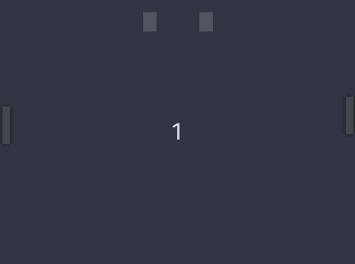
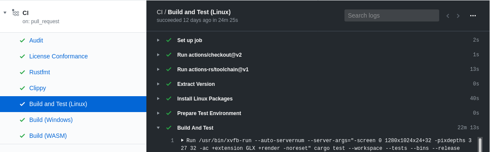

Introduction
This is the report of the initial effort to add Web Assembly (WASM) support to the Amethyst game engine.
Feel free to refer to this to learn from our experience.
Report accurate as of 2020-04-25.
Initial State
Before beginning any implementation work, some scout work was done to collate existing information from pre-existing attempts. The summary from each attempt is listed below.
Jojolepro – amethyst:wasm
Attempt at getting `amethyst` to compile with `wasm-bindgen`.
- Top down approach – try to get
amethystto compile for wasm with minimal features, then incrementally enable crates. - Partial update of winit to 0.21.
- Places crates / code behind feature toggles.
Relevant commits:
-
-
removes
backtracefromamethyst_error -
places the following crates under a feature flag in
Cargo.toml:- amethyst_controls
- amethyst_input
- amethyst_ui
- amethyst_utils
- amethyst_window
- winit
- failure
-
-
2c9a78f2: adds#[cfg(feature = "renderer")]in mainamethystcrate. -
-
Bumps
winitto0.21and updates features. -
Puts the following behind feature flags:
amethyst_audioamethyst_ui
-
Removes
#[cfg(feature = "renderer")]fromsrc/app.rs:30
-
Semtexv – amethyst:rendy-all (based on #2040)
Updates `amethyst` to use `winit 0.21` and `rendy 0.5`.
Summary:
- Updates winit to 0.21, including
Eventand screen logical / physical size changes. - Updates rendy to 0.5.1.
- Updates most (all?) examples to properly run with
winit's new event loop mechanism.
Interesting diff:
/// # Examples
///
/// ~~~no_run
/// let event_loop = EventLoop::new();
/// let mut game = Application::new(assets_dir, Example::new(), game_data)?;
/// game.initialize();
/// event_loop.run(move |event, _, control_flow| {
/// #[cfg(feature = "profiler")]
/// profile_scope!("run_event_loop");
/// log::trace!("main loop run");
/// game.run_winit_loop(event, control_flow)
/// })
/// ~~~
Omni-viral – amethyst:gl (PR #1877)
The first attempt that compiled and ran.
-
Updates winit to
0.20.0-alpha2. -
Disables the following crates:
amethyst_audioamethyst_network
Also for
amethyst_gltf:mikktspace
-
Removes usage of
rayon::ThreadPool. -
Changes shader compilation script, and recompiles all shaders.
Jojolepro – web_worker
Allows rayon::ThreadPool to be used by using a custom constructor.
Jaynus – rendy:jaynus-fixes
- Bumps
gfx-halto latest git master as of March 11, 2020 - Compiles
rendy/rendyexamples to WASM usingwasm-bindgen
Plan
Because a game engine covers many complex domains -- event loop, audio, graphics, etcetera -- we want to make sure there is a "good" starting state, and be able to develop and test each domain independently. In addition, we want to encourage contribution from the community where possible.
Jump Start
The plan to create a stable equilibrium used is:
- Get
amethystto compile for thewasm32-unknown-unknowntarget. - Set up an end-to-end project to test usage of
amethyst. - Set up automated build to ensure all contributions maintain that base quality check.
- Make it easier for potential contributors to get into the "build, test, contribute" loop.
Equilibrium
There are two workflows for ongoing development:
-
Discovery
- Run end-to-end project to discover issues.
- Open a GitHub issue for each issue, providing any stack traces or screenshots, and the expected behaviour for the resolution of the issue.
- Provide some initial investigation to where the root cause of the problem lies, to make it easier to begin working on a fix.
-
Implementation
- Contributor finds an issue they wish to do.
- Locally, the contributor implements a fix, and tests it against end-to-end project.
- The change is submitted for review, and amended if necessary.
- After passing review and the automated build, the contribution is merged.
Implementation
This section covers the WASM support implementation in chronological (time) order.
ℹ️ Note: There is no design process as we are simply adding WASM support to existing functionality, or gating features as unsupported by WASM.
-
Week 1: Contribution Baseline – Preparation of repositories and guidelines.
-
Week 2: End-to-End Discovery – Event loop execution and first successful run of Pong.
-
Week 3: Stability and UI – WASM memory fix and UI rendering correction.
-
Week 4: Audio and Rendering – Audio playback and rendering fixes on Windows.
-
Week 5: Tidying – Input loading and automated testing with GL.
-
Week 6: Fin Ack – Web sockets, logging, and UI rendering correction.
Week 1: Contribution Baseline
Summary
Date: 2020-03-16 to 2020-03-21
- Amethyst compiles to a WASM library.
- Repository forks and branches are created.
- Contribution guide is written.
- Basic CI check is set up.
| Repository | Commit Range |
|---|---|
pong_wasm | 9b403f69^..9f6240fe |
amethyst | 8044b2a5^..0af12f84 |
rendy | 27e5cdc1^..757c4aa9 |
glutin (fork) | f29d87a3 |
gfx-rs (fork) | 3e6db5f0 |
winit (fork) | 26e4374a^..04225a39 |
builder (CI agent) | 13730efd^..2bb67aae |
End Result
$ wasm-pack build -- --features "wasm gl"
# ..
[INFO]: :-) Done in 37.87s
[INFO]: :-) Your wasm pkg is ready to publish at ./pkg.
Implementation
Based off the #2040 branch, which has the changes to use the new winit event loop introduced in winit 0.20.0.
-
Get amethyst to compile with
winit 0.22.0for better WASM support. (winit#1478) -
Attempt to compile amethyst with
wasm-pack.Instructions from https://rustwasm.github.io/docs/book/ were followed to package the library.
When building with:
wasm-pack build --target no-modules -- --features "wasm gl"-
If it fails due to usage of a
-syslibrary, feature gate the dependency and the code that uses it. -
If it fails and requires a code change:
- Fork the repository.
- Create a
wasmbranch. - Amend the code.
- Point
amethystat the forked repository. - Make a pull request back to the original repository.
Repeat until
wasm-packsucceeds. -
-
Create end-to-end application, and make sure it compiles:
pong_wasm. -
Write contribution guidelines. (amethyst#2171)
Make it easy:
- Links to all forks and branches.
- Cut and paste commands.
- Setup and development instructions.
-
Create CI job to build amethyst as a WASM library. (amethyst#2175)
Note: CI agent needs
wasm32-unknown-unknowntarget, andrust-srccomponent. -
Publicise the WASM effort on the community forum and chat server.
Week 2: End-to-End Discovery
Summary
Date: 2020-03-22 to 2020-03-28
-
Limitations discovered around:
winitevent loop and WASM event loop requirements.- Web worker threading requirements.
- Audio loading requirements.
- Texture loading requirements.
-
Assets load from HTTP source using XHRs.
| Repository | Commit Range |
|---|---|
pong_wasm | 3bcf94de^..de355df6 |
amethyst | 65a1e27a^..1d491d18 |
rendy | e1e03fee^..4de9ca2a |
winit (fork) | 8595aec7^..9827b34a |
gfx-rs (fork) | a9a4419d^..672f551a |
web_worker | 892abf29^..2b78b6ca |
End Result

Implementation
-
Clean up
web_workerrepository.- Move
jojolepro/web_workertoamethyst/web_worker - Allow constructing thread pool without JavaScript (workers still need
worker.jsto run).
- Move
-
Get dispatcher to execute serially –
"no-parallel". (amethyst#2177, amethyst#2189, amethyst#2191) -
Assets load from server via
XmlHttpRequests. (amethyst#2180)- Loading texture assets into GL backend. (amethyst#2174)
-
Get GL to render correctly. (amethyst#2198)
-
Update
pong_wasmto run. (pong_wasm#3bcf94d)
Week 3: Stability and UI
Summary
Date: 2020-03-29 to 2020-04-04
- UI pass works
- WASM app doesn't crash 90% of the time from double mutable borrow in winit.
End Result

Implementation
-
Winit stability fixes.
- Fix double borrow mut. (amethyst/winit#4fbf95b, winit#1512)
- Add
requestAnimationFramesupport towinit. (amethyst/winit#3d5274b, winit#1493, winit#1519)
-
Take in HTML
<canvas>element from user. (amethyst#2202, rendy#48915cb, pong_wasm#1)- Update to
gfx-hal 0.5. - Don't invert coordinate system. (rendy#5d10084)
- Update to
-
Fixed UI pass by using consistent shader variable names. (amethyst#2205, amethyst#2207)
Week 4: Audio and Rendering
Summary
Date: 2020-04-05 to 2020-04-11
- GL depth buffer fix -- rendering is corrected on Windows.
- Audio plays in WASM, albeit delayed.
End Result
Implementation
-
Split audio logic from other systems. (amethyst#2215, amethyst#2216, pong_wasm#2)
This allows the rest of Pong to run even if audio is disabled.
-
Initialization stability on Windows:
Make drag and drop
winitfeature optional. (amethyst/winit#a2eea3e, winit#1524) -
Fixed
gfxissues.- Clear GL depth buffer. (gfx#35c45ac, gfx#3202, gfx#3205)
- Load
Rgb8Srgbtexture format. (gfx#c4b75d3, gfx#3222, gfx#3223)
-
Get audio to play on WASM.
- Use ishitatsuyuki/cpal#dpeckett-webaudio-poc, which is based off wasm-bindgen POC by
dpeckett. (amethyst/cpal#ee1ee1a, cpal#372) - Send audio through
AudioBufferin JavaScript. (amethyst#2195, amethyst#2219) - Use
sedhack to allow web workers to be instantiated without anAudioContext. (pong_wasm#3)
- Use ishitatsuyuki/cpal#dpeckett-webaudio-poc, which is based off wasm-bindgen POC by
Week 5: Tidying
Summary
Date: 2020-04-12 to 2020-04-18
-
Input configuration loads from server.
-
amethyst_testupdated to work with winit 0.22.0 event loop.Tests that require a graphical backend can run on CI without dedicated graphics cards by using the software GL rendering backend -- tests can be run through XVFB.
End Result

Implementation
-
Load input configuration from server using JavaScript. (amethyst#2214, pong_wasm#4)
This is simply a
fetchinvocation. For better UX, we should:- Initialize the fetch from within the application
- Return control to the browser so that it is responsive, and indicate to the user that a resource is being fetched, such as by rendering a spinner.
- Resume application initialization after the fetch has returned.
-
Remove requirement to specify
shredin crate[patch]section. (amethyst#2238) -
Update
amethyst_testframework to work with newwinit.- Expose API function for bundles needing the
EventLoopto be built. (amethyst#2240) - Allow multiple
winitevent loops to run in sub threads. (amethyst#2241, amethyst#2245, autexousious#222, autexousious#223)
- Expose API function for bundles needing the
Week 6: Fin Ack
Summary
Date: 2020-04-19 to 2020-04-25
- UI Coordinates / Screen Dimensions correction
- Configurable Web Logger
- Net Server and Client
End Result
Implementation
-
Allow web logger to be configured. (amethyst#2249, amethyst#2250, console_log#6)
This was necessary as the rate of log messages was about 1000 messages per second. This meant:
- Filtering for relevant log messages was extremely difficult.
- The browser would lag and be unusable to work with.
-
Set canvas width/height only if unset. (amethyst#2247, amethyst/gfx#8537dfb, gfx#3224, gfx#3225)
Quirk in this bug fix is, when setting the
"width"attribute on the<canvas>element, the next read ofwidth()still returns the old value. However, the updated value is returned after interacting with the canvas' WebGL2 graphics context. -
Provide
WebSockettransport layer implementation foramethyst_network. (amethyst#2251, amethyst#2253, autexousious#209, autexousious#221)- Use
tungstenitefor native targets. - Use
web-sys::WebSocketforwasm32-unknown-unknowntarget.
- Use
Issue Summary
| Item | Crate(s) | WASM Rush links | Upstream Status |
|---|---|---|---|
Events must be Clone | winit, amethyst | #2211, #2040 | ❌ #1478 |
rendy to use gfx-hal 0.5 | rendy, amethyst_rendy | rendy:wasm, #2198 | ❌ #275, #277 |
| WASM: parallel dispatch | amethyst, web_worker | #2177, #2189 | ❌ #2191 |
| Load assets asynchronously | amethyst_assets | #2180, #2182 | ❌ #2228 |
| Load textures as thread local | amethyst_rendy | #2174 | ✔️ #2198 |
winit double borrow mut | winit | 4fbf95b | ✔️ #1512 |
winit::requestAnimationFrame | winit | 3d5274b | ✔️ #1493, #1519 |
Use user provided <canvas> | rendy, amethyst_rendy | #2202, 48915cb, #1 | ❓ |
| Use same shader variable names | amethyst_ui | #2205, #2207 | ✔️ |
winit drag-n-drop optional | winit | a2eea3e | ❌ #1524 |
| Clear GL depth buffer | gfx-hal | 35c45ac | ✔️ #3202, #3205 |
Load Rgb8Srgb texture format | gfx-hal | c4b75d3 | ✔️ #3222, #3223 |
Proper AudioSocket support | cpal | ee1ee1a, #2195, #2219, #3 | ❌ #372, #2222 |
| Load configuration from server | amethyst | #2214, #4 | ❌ |
| Integration test support | amethyst_test | #2241, #222, #223 | ✔️ #2240, #2245 |
| Configurable web logger | console_log, amethyst | #2249, #2250 | ✔️ #6 |
| Overwritten canvas dimensions | gfx-hal | #2247, 8537dfb | ✔️ #3224, #3225 |
WebSocket transport layer | amethyst_network | #2251, #209, #221 | ✔️ #2253 |